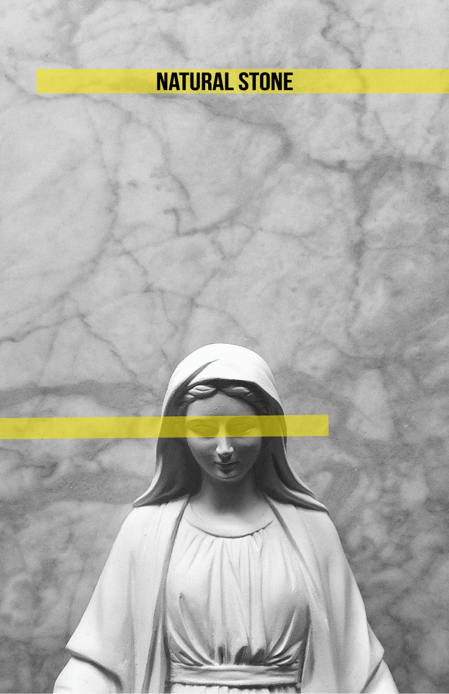
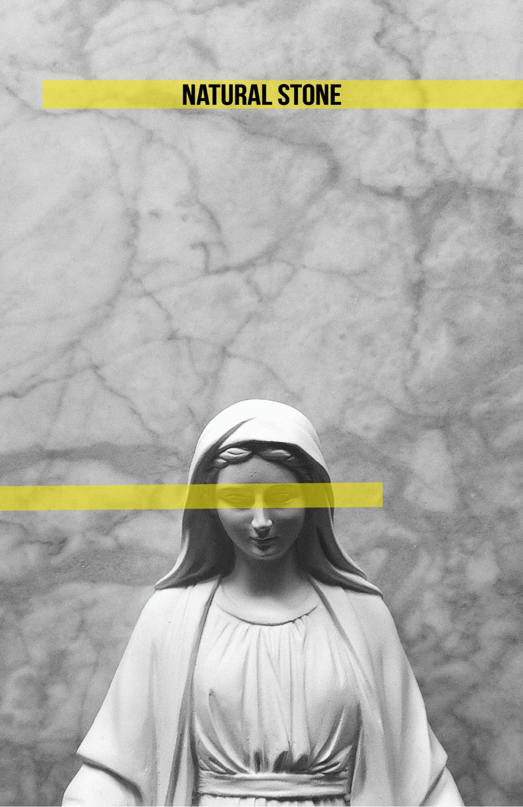

about us
SILKSTONE HAS BEEN ESTABLISHED IN 2014 FOR THE PURPOSE OF EXPORT MARBLE, TRAVERTINE, QUARTZ AND HANDICRAFTS BASICLY IN THE PRESERVATION OF RICH PERSIAN HANDICRAFTS. OUR EXPERIENCE IN THE INDUSTRY HAS GIVEN US THE KNOWLEDGE ABOUT THE CUSTOMER NEEDS. WE ALWAYS STRIVE TO PROVIDE OUR CUSTOMERS SUPERIOR QUALITY PRODUCTS AND WORLD CLASS CUSTOMER SERVICE. SILKSTONE REPRESENTS HIGHLY QUALITY MATERIAL, EXCELLENT SERVICE AND ON TIME DELIVERY. OUR SERVICES INCLUDE INSPECTION OF ALL MATERIALS (BORDERS, PROFILES, SLABS AND BLOCKS)
mission
OUR MISSION IS TO FULFILL THE EXPECTATIONS OF OUR CUSTOMERS AT HIGHEST LEVEL BY DEVELOPING OUR PRODUCT AND SERVICE QUALITY CONTINOUSLY AND CREATING STRONG EMOTIONAL BONDS FOR GENERATING CUSTOMER LOYALTY.
vision
OUR VISION IS TO BECOME A PIONEER, TRUSTWORTHY COMPANY WHICH INCREASES ITS PRODUCTIVITY AND INDUSTRIAL EFFICIENCY CONSTANTLY AT GLOBAL MARKET.
 

description
- MATERIAL TYPE: MARBLE
- MAIN COLOR: BLACK
- SURFACE FINISH: POLISHED
- PACKING DETAILS: BASED ON CUSTOMER REQUEST
BLACK MARQUINA MARBLE IS AMONG THE NEWEST AND MOST PRACTICAL STONES USED IN DIFFERENT PARTS OF THE BUILDING AND RESTROOMS,THE KIND OF MARBLE HAS A BLACK BACKGROUND WITH WHITE STRIPES IT IS THE PROFESSIONAL DESIGNER'S FAVOURITE MATERIAL FOR STYLISH AND SPECIAL DESIGNS.
FEATUERS
-UNIQUE DARK COLOURS - LOW WATER ABSORPTION PERCENTAGE DUE TO COMPACTION - HIGH POLISHABILITY DUE TO HIGH DENSITY - OUTSTANDING TRANSPARENCY
description
- MATERIAL: MARBLE
- SURFACE FINISH: POLISHED
- PAKING DETAILS BASEON ON CUSTOMER REQUEST
EMOTION GRAY MARBLE IS AN IDEAL OPTION FOR INTERIOR AND EXTERIOR SPACES THAT SEEK A GENTLE DIFFERENTIATION THROUGH PEACEFUL AND DISTINGUISHED TONES THE SELECTION OF THIS MATERIAL EXPRESSES A TASTE FOR REINTERPRETING TRADITIONAL CONCEPTS ENDOEING THEM WITH A MORE CONTEMPORARY LANGUAGE AND ADAPTING THEM TO DISTINGUISHED BUT AT THE SAME TIME COSMOPOLITAN CHROMATIC RANGE THAT ENCOMPASSES PEARL TONES, GRAYISH OCHER, AND SILVER, GRAY MARBLE IS ABLE TO SET TRENDS AND VANGUARD.
FEATUERS
-UNIQUE HIGH POLISHABILITY DUE TO HIGH DENSITY - OUTSTANDING TRANSPARENCY

description
- MAIN COLOR: GRAY
- SURFACE FINISH: POLISHED
- PAKING DETAILS BASEON ON CUSTOMER REQUEST
IF YOU ARE LOOKING FOR A NATURAL STONE THAT INVITES CALM ADDS ELEGANCE TO THE ENVIROMENTS, THAT IS THE CRYSTAL GRAY MARBLE THE NEUTRSLITY AND VERSATILITY OF THIS GRAY MARBLE MAKES IT GOOD ALLY FOR ARCHITECTS AND INTERIOR DESIGNERS, ALLOWING THEM TO CREAT SPACES OF DIFFERENT STYLES.THE VISUAL ASPECT CREYSTAL GRAY IS A GRAY MARBLE WITH WHITE AND GRAY VEINS THAT RUN IRREGULARLY ACROSS THE ENTIRE SURFACE OF THE MARBLE. THE POSSIBILITIES OF COMBINING CRYSTAL GRAY WITH OTHER MATERIALS ARE ENDLESS
FEATUERS
-UNIQUE GRAY COLOURS - LOW WATER ABSORPTION PERCENTAGE DUE TO COMPACTION - HIGH POLISHABILITY DUE TO HIGH DENSITY - OUTSTANDING TRANSPARENCY.
description
- MATERIAL: MARBLE
- MAIN COLOR: BEIGE
- SURFACE FINISH: POLISHED
- PAKING DETAILS BASEON ON CUSTOMER REQUEST
DIPLOMAT MARBLE IS ONE OF THE MOST RESILIENT BUILDING ROCKS IN THE WORLD AND IT IS BEAUTIFUL COLOR THAT IS NOT COMPARABLE TO ANY RELATIVELY EASY TO COMBINE WITH ANY OTHER TYPE OF MATERIALS. THIS QUALITY IS DUE TO A SOFT TONE, WHICH IS ALSO ABLE TO TRANSMIT WARMTH AND COMFORT TO AMBIENCES ARCHITECTS AND INTERIOR DESIGNERS DO NO HASITATE TO MAKE USE OF THIS NATURAL STONE WHEN CREATING WELCOMING AMBIENCES OF GREAT BEAUTY, ESPECIALLY SEARCHING FOR ETHNIC OR COLONIAL SURROUNDINGS.
FEATUERS
-UNIQUE OLIVE AND BEIGE COLOURS - LOW WATER ABSORPTION PERCENTAGE DUE TO COMPACTION -HIGH POLISHABILITY DUE TO HIGH DENSITY - OUTSTANDING TRANSPARENCY
description
- DESCRIPTION MATERIAL: MARBLE
- MAIN COLOR: BROWN
- SURFACE FINISH: POLISHED
- PAKING DETAILS: BASEON ON CUSTOMER REQUEST
TALKING ABOUT MARFIL MARBLE MEANS TALKING ABOUT DESIGN, ARCHITECTURE AND DECORATION FOR THIS REASON, THE BEST-KNOWN ARCHITECTS AND INTERIOR DESIGNERS IN THE WORLD USE THIS VALUABLE MATERIALS IN ORDER TO CREAT COUNTLESS PROJECTS NATURE HAS BEEN ABLE TO CREATE, OVER THE YEARS, A BEAUTIFUL AND UNIQUE MATERIAL CALLED
FEATUERS
-LOW WATER ABSORPTION PERCENTAGE DUE TO COMPACTION HIGH POLISHABILITY DUE DENSITY - OUTSTANDING TRANSPARENCY

description
- MATERIAL: TRAVERTINE
- MAIN COLOR: BEIGE / BROWN
- SURFACE FINISH: POLISHED
- PAKING DETAILS BASEON ON CUSTOMER REQUEST
A DESIGN THAT BEARS THE SIGNS OF TIME AN IONIC ROCK WHOSE ELEGANCE DERIVES FROM A DELICATE AND GRADUAL MOVEMENT OF WATER OVER THE YEARS.TERAVERTINE TIVOLI IS ESPECIALLY GOOD FOR EXTERIOR AND INTERIOR WALL AND FLOOR APPLICATIONS, POOL AND WALL CAPPING AND OTHER DESIGN PROJECT.TERAVERTINE TIVOLI CAN BE PROCESSED INTO POLISHED, SAWN CUT SANDED, ROCKFACED TUMBLED AND SO ON.
FEATUERS
UNIQUE COLOURS - LOW WATER ABSORPTION PERCENTAGE DUE TO COMPACTION - HIGH POLISHABILITY DUE TO HIGH DENSITY OUTSTANDING TRANSPARENCY
description
- MATERIAL: MARBLE
- MAIN COLOR: WHITE
- SURFACE FINISH: POLISED
- PAKING DETAILS: BASED ON CUSTOMER REQUEST
BIANCO MARBLE FOR ITS LIMITED AVAILABILITY AND HIGH DEMAND FROM ALL OVER THE WORLDS THAT MAKE IT VERY VALUABLE FOR ITS ADVANTAGE AND EXCLUSIVE CHARACTERS OF DRAMATIC VEINING, IT IS VERY POPULAR AMONG DESIGNERS AND HOUSE OWNERS BECAUSE OF GOOD PRESSURE RESISTANCE, UNIQUE VEINS, HIGHLY POLISHED, EXQUISITE BIANCO MARBLE CAN PRODUCE BEAUTIFUL MARBLE SHOWERS WALLS, FLOOR TILES, MARBLE KITCHEN COUNTERTOPS AND OTHER DESIGN PRODUCTS.
FEATUERS
UNIQUE PATTERN - LOW WATER ABSORPTION PERCENTAGE DUE TO COMPACTION - HIGH POLISHABILITY DUE TO HIGH DENSITY OUTSTANDING TRANSPARENCY.